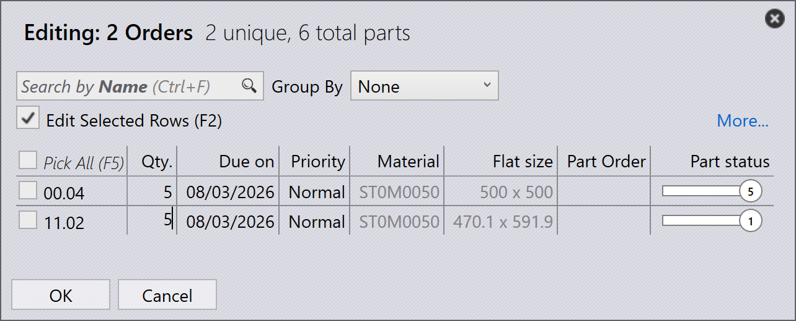

Aufträge
Ein Auftrag definiert, welche Teile in welcher Stückzahl und bis wann gefertigt werden müssen. Er steuert die Produktionsplanung und -ausführung in TruSmartCAM. Aufträge können mit verschiedenen Methoden erstellt oder importiert und für die Produktionsplanung in Jobs umgewandelt werden.
Auftragspanel

|
|
Aufträge bearbeiten
Wählen Sie einen oder mehrere Aufträge aus und klicken Sie mit der rechten Maustaste, um gemeinsame Auftragsdetails wie Menge, Fälligkeitsdatum, Priorität und Kundeninformationen zu ändern.
Wenn mehrere ausgewählte Aufträge unterschiedliche Werte erfordern, verwenden Sie die Option Check-out for Editing, um jeden Auftrag je nach Anforderung einzeln zu bearbeiten.

Alle an den Aufträgen vorgenommenen Aktualisierungen werden sofort auf die Datenbank angewendet. Verwenden Sie den Befehl Delete, um Aufträge aus der Auftragsbibliothek zu entfernen.
| Der Befehl Delete entfernt nur die Aufträge. Teile, die mit den jeweiligen Aufträgen verknüpft sind, werden nicht aus der Teilebibliothek gelöscht. |
Aufträge planen
Wählen Sie einen oder mehrere Aufträge aus, klicken Sie mit der rechten Maustaste und klicken Sie auf New… → Job, um die ausgewählten Aufträge in Jobs umzuwandeln. Verwenden Sie die Sortier- und Filteroptionen, um relevante Aufträge vor der Joberstellung zu gruppieren.

Sobald die Aufträge in einen Job umgewandelt wurden:
-
Wird der Job auf die Jobs-Seite verschoben
-
Werden die Aufträge aus der Auftragsliste entfernt
-
Kann anschließend der Standard-Jobplanungsworkflow für die Produktionsplanung und das Schachteln verwendet werden
Weitere Informationen zum Jobplanungsworkflow finden Sie unter Automatische Planung
Zusätzliche Informationen
-
Wenn ein Job, der Aufträge enthält, gelöscht wird, werden die zugehörigen Aufträge automatisch auf die Seite Orders Ready zurückverschoben, es sei denn, der Job oder das Teil ist als Completed markiert.
-
Aufträge können über das Fenster Edit Job basierend auf den Produktionsanforderungen zu einem vorhandenen Job hinzugefügt oder daraus entfernt werden.